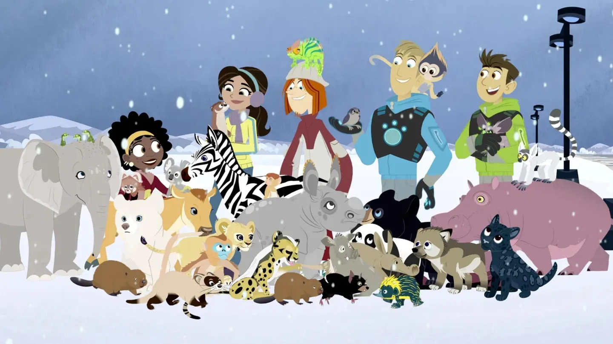

About Wild Kratts
The Wild Kratts are scientists who study animals and share their facts and adventures with children. They transform into the animals and see the world from their perspective.
Wild Kratts and Team with Aminals
Wild Kratt's Characteristics
- They love adventures
- They transform to their favorite animals
- They wear creature powersuits
- They love to spend time in the tortouga